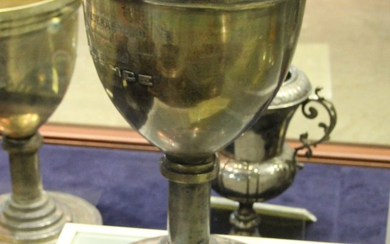
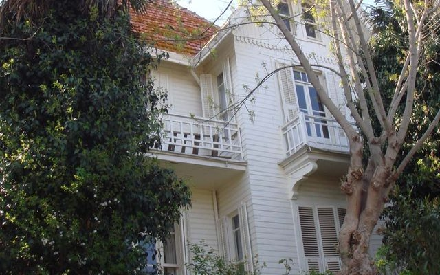
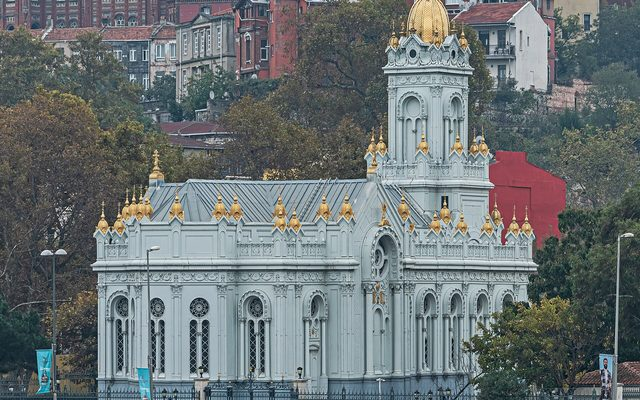

Home › Things to see, province by province › İstanbul
The Kültür Varlıkları guide lists 89 places in İstanbul: 52 museum, 21 castle & historic building, 14 religious building, 2 archaeological site. Below you will find the highlights, a map and the full list.
⭐ Highlights

1 · İstanbul · Museumİstanbul Archaeology Museums
Istanbul Archaeology Museums, in Gülhane in the outer gardens of Topkapı Palace, were founded as the Ottoman Empire's first modern museum.

2 · İstanbul · MuseumGreat Palace Mosaic Museum
The Great Palace Mosaic Museum, just beneath the Arasta Bazaar in Sultanahmet, displays the most impressive remains of the Great Palace where Byzantine emperors lived…

3 · İstanbul · MuseumAdalar Museum
The Islands Museum, opened in 2010 in a former hangar on Büyükada, is a city museum telling the story of the Princes' Islands: from Byzantine exile to summer life with…
🗺 On the map
📍 All places (89)
Museum (52)
İstanbul Archaeology MuseumsMuseumGreat Palace Mosaic MuseumMuseumAdalar MuseumMuseum Adam Mickiewicz MuseumMuseum
Adam Mickiewicz MuseumMuseum Ara Güler MuseumMuseum
Ara Güler MuseumMuseum ArterMuseum
ArterMuseum Askeri MüzeMuseum
Askeri MüzeMuseum Atatürk Müzesi (Şişli)Museum
Atatürk Müzesi (Şişli)Museum Atlas 1948 İstanbul Sinema MuseumMuseum
Atlas 1948 İstanbul Sinema MuseumMuseum Hagia Sophia History and Experience MuseumMuseum
Hagia Sophia History and Experience MuseumMuseum Beyazıt Hamam Kültürü MuseumMuseum
Beyazıt Hamam Kültürü MuseumMuseum Beykoz Cam and Billur MuseumMuseum
Beykoz Cam and Billur MuseumMuseum Cendere Sanat MuseumMuseum
Cendere Sanat MuseumMuseum Elgiz Çağdaş Sanat MuseumMuseum
Elgiz Çağdaş Sanat MuseumMuseum
Fenerbahçe MuseumMuseum Fethiye MuseumMuseum
Fethiye MuseumMuseum Florya Atatürk Deniz PavilionMuseum
Florya Atatürk Deniz PavilionMuseum Galata Mevlevihanesi MuseumMuseum
Galata Mevlevihanesi MuseumMuseum Hafıza 15 Temmuz MuseumMuseum
Hafıza 15 Temmuz MuseumMuseum Kemal Sunal MuseumMuseum
Kemal Sunal MuseumMuseum Kâzım Karabekir Paşa MuseumMuseum
Kâzım Karabekir Paşa MuseumMuseum Masumiyet MuseumMuseum
Masumiyet MuseumMuseum Mehmet Akif Ersoy Hatıra HouseMuseum
Mehmet Akif Ersoy Hatıra HouseMuseum MiniatürkMuseum
MiniatürkMuseum Müze GazhaneMuseum
Müze GazhaneMuseum Orhan Kemal MuseumMuseum
Orhan Kemal MuseumMuseum Panorama 1453 Tarih MuseumMuseum
Panorama 1453 Tarih MuseumMuseum Pera MuseumMuseum
Pera MuseumMuseum Pierre Loti MuseumMuseum
Pierre Loti MuseumMuseum Rahmi M. Koç MuseumMuseum
Rahmi M. Koç MuseumMuseum Rezan Has MuseumMuseum
Rezan Has MuseumMuseum Sadberk Hanım MuseumMuseum
Sadberk Hanım MuseumMuseum
Sait Faik Abasıyanık MuseumMuseum Sakıp Sabancı MuseumMuseum
Sakıp Sabancı MuseumMuseum Salt GalataMuseum
Salt GalataMuseum Türk Vakıf Hat Sanatları MuseumMuseum
Türk Vakıf Hat Sanatları MuseumMuseum Türk and İslam Eserleri MuseumMuseum
Türk and İslam Eserleri MuseumMuseum Türkiye İş Bankası MuseumMuseum
Türkiye İş Bankası MuseumMuseum Yahya Kemal MuseumMuseum
Yahya Kemal MuseumMuseum Yıldız Porselen FabrikasıMuseum
Yıldız Porselen FabrikasıMuseum santralistanbul Enerji MuseumMuseum
santralistanbul Enerji MuseumMuseum Çatalca Mübadele MuseumMuseum
Çatalca Mübadele MuseumMuseum İslam Bilim and Teknoloji Tarihi MuseumMuseum
İslam Bilim and Teknoloji Tarihi MuseumMuseum İsmet İnönü House MuseumMuseum
İsmet İnönü House MuseumMuseum İstanbul Deniz MuseumMuseum
İstanbul Deniz MuseumMuseum İstanbul Havacılık MuseumMuseum
İstanbul Havacılık MuseumMuseum İstanbul ModernMuseum
İstanbul ModernMuseum İstanbul Oyuncak MuseumMuseumHilmi Nakipoğlu Fotoğraf Makineleri MuseumMuseumHisart Canlı Tarih and Diorama MuseumMuseumKandilli Deprem MuseumMuseumİstanbul Havalimanı MuseumMuseum
İstanbul Oyuncak MuseumMuseumHilmi Nakipoğlu Fotoğraf Makineleri MuseumMuseumHisart Canlı Tarih and Diorama MuseumMuseumKandilli Deprem MuseumMuseumİstanbul Havalimanı MuseumMuseumCastle & historic building (21)
 Anadoluhisarı FortressCastle & historic building
Anadoluhisarı FortressCastle & historic building Aynalıkavak PavilionCastle & historic building
Aynalıkavak PavilionCastle & historic building Beylerbeyi PalaceCastle & historic building
Beylerbeyi PalaceCastle & historic building Binbirdirek CisternCastle & historic building
Binbirdirek CisternCastle & historic building Bozdoğan KemeriCastle & historic building
Bozdoğan KemeriCastle & historic building Dolmabahçe PalaceCastle & historic building
Dolmabahçe PalaceCastle & historic building Ihlamur PavilionCastle & historic building
Ihlamur PavilionCastle & historic building Küçüksu PavilionCastle & historic building
Küçüksu PavilionCastle & historic building Kız TowerCastle & historic building
Kız TowerCastle & historic building Maslak KasırlarıCastle & historic building
Maslak KasırlarıCastle & historic building Rami Kışlası (Rami Kütüphanesi)Castle & historic building
Rami Kışlası (Rami Kütüphanesi)Castle & historic building Rumelihisarı FortressCastle & historic building
Rumelihisarı FortressCastle & historic building Theodosius SurlarıCastle & historic building
Theodosius SurlarıCastle & historic building Topkapı PalaceCastle & historic building
Topkapı PalaceCastle & historic building Yedikule FortressCastle & historic building
Yedikule FortressCastle & historic building Basilica CisternCastle & historic building
Basilica CisternCastle & historic building Yıldız PalaceCastle & historic building
Yıldız PalaceCastle & historic building Çemberlitaş Sütunu (Konstantin Forumu)Castle & historic building
Çemberlitaş Sütunu (Konstantin Forumu)Castle & historic building Galata TowerCastle & historic building
Galata TowerCastle & historic building Şerefiye CisternCastle & historic buildingFildamı CisternCastle & historic building
Şerefiye CisternCastle & historic buildingFildamı CisternCastle & historic buildingReligious building (14)
 Ahrida SynagogueReligious building
Ahrida SynagogueReligious building Hagia Irene Monument MuseumReligious building
Hagia Irene Monument MuseumReligious building Hagia Sophia Grand MosqueReligious building
Hagia Sophia Grand MosqueReligious building
Bulgar Sveti Stefan (Demir) ChurchReligious building Eyüp Sultan MosqueReligious building
Eyüp Sultan MosqueReligious building Fener Rum Patrikhanesi and Aya Yorgi ChurchReligious building
Fener Rum Patrikhanesi and Aya Yorgi ChurchReligious building Chora Church (Kariye Mosque)Religious building
Chora Church (Kariye Mosque)Religious building Mihrimah Sultan Mosque (Edirnekapı)Religious building
Mihrimah Sultan Mosque (Edirnekapı)Religious building Rüstem Paşa MosqueReligious building
Rüstem Paşa MosqueReligious building St. Antuan ChurchReligious building
St. Antuan ChurchReligious building Blue Mosque (Sultan Ahmed Mosque)Religious building
Blue Mosque (Sultan Ahmed Mosque)Religious building Süleymaniye MosqueReligious building
Süleymaniye MosqueReligious building Monastery of Stoudios (İmrahor Mosque)Religious building
Monastery of Stoudios (İmrahor Mosque)Religious building Şehzade MosqueReligious building
Şehzade MosqueReligious building